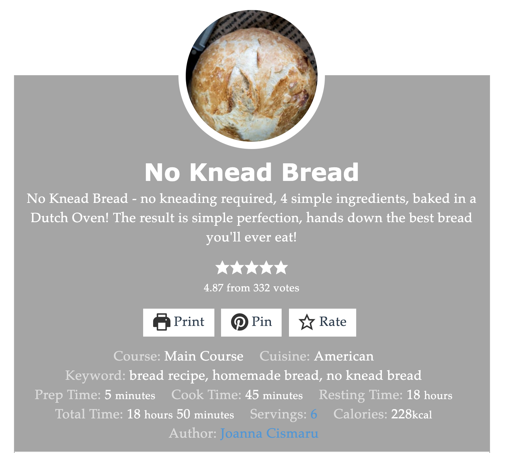

      <section class="theme-invert">
        <h2 hidden aria-hidden="false">No Knead Bread</h2>
        <figure>
          <a href="https://www.jocooks.com/recipes/no-knead-bread/">
          
          </a>

          <figcaption>
            <p>
            
            </p>

          </figcaption>
        </figure>
      </section>
